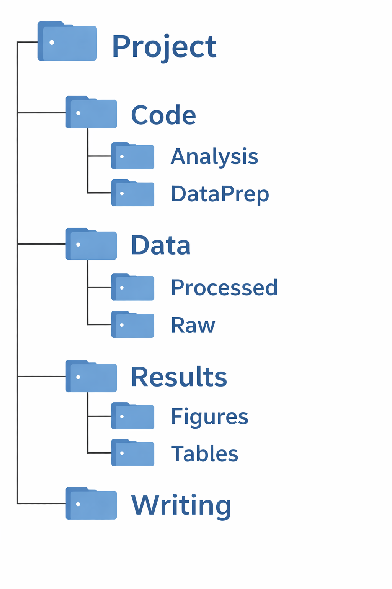
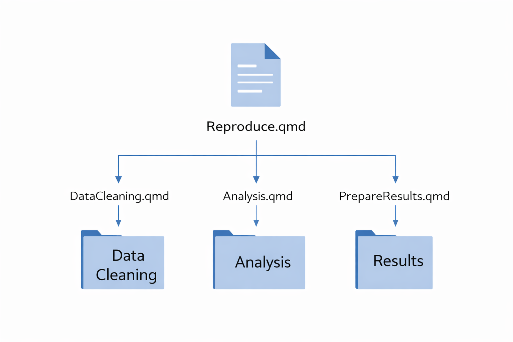
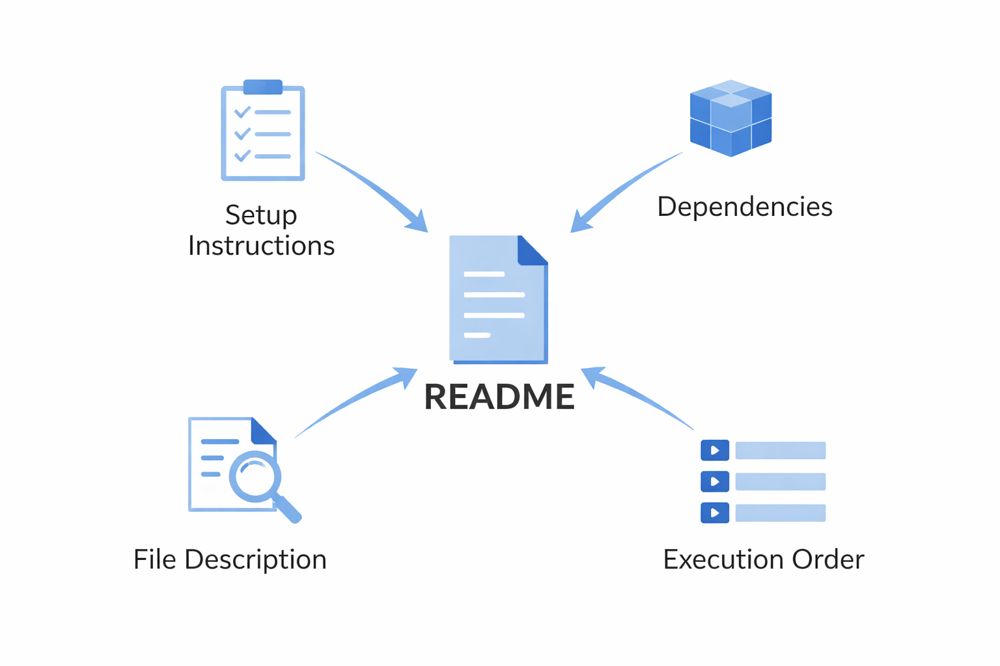

Department of Applied Economics, University of Minnesota
Feel free to stop me at any time if you have questions or want to share your thoughts.
Goal of today’s session
Definition: Reproducibility
Reproducibility refers to the ability of a researcher to duplicate the results of a prior study using the same materials as were used by the original investigator (Cacioppo et al. 2015).
In essence, reproducibility asks:
“Can another researcher go from raw data to final results using only the materials you provide?”
Reproducibility has always been a core scientific principle (Vilhuber 2020). However, concerns about transparency and reproducibility have increased in recent years.
So, what should we do to make our research reproducible in practice?
Minimum Rule
Every single action taken during the entire research process is documented in a way that anybody can follow to implement the same actions (no hidden actions) to produce exactly the same results.
The following practices can improve the quality of reproducibility:
(i) Project organization

(ii) Reproducible workflow

(iii) Documentation

Important
Organize code, data, and outputs into clearly named folders and files so the project structure is easy to navigate.
For example
Data/Raw/Data/Processed/here::here() in R)<ProjectName>.Rproj file)Important
A reproducible workflow means that the entire process—from raw data to final results—is executed through code in a clear, automated, and traceable way, with no hidden steps.
Example workflow
01-clean-data.qmd02-construct-variables.qmd03-run-analysis.qmd04-generate-figures-tables.qmdmain.qmd (runs everything in order)main.qmd runs everything in the correct order and reproduce all results from raw data.
NOTE: Manual edits should be minimized. If unavoidable, they should be clearly documented so others can follow the same process.
Important
Documentation provides clear, step-by-step guidance so that others can understand and reproduce your results without guesswork.
It is typically provided in a README file.
What should a README include?
Examle README files for real research project
Of course, reproducibility also requires sharing your materials in a way that others can access and use them.
Important
A reproducible project should be publicly accessible, version-controlled, and citable.
Note
You can share code and data together on data repositories, but in many cases, Github is used for development, while data repositories are used for placing data.
Reproducibility practices (e.g., project organization, reproducible workflow, and detailed documentation) benefit not only the scientific community but also you and your collaborators.
We will go through an example of a reproducible project to see how the key components of reproducibility are implemented in practice.
Please download the project material by cloning the following github repository: Download files
You can clone the repository by:
Check
.qmd files instead of .R files?writing/manuscript_to_pdf.qmd) → How are tables and figures generated and included?main.qmd) → How is the entire project reproduced?Do you have any suggestions on how the project can be improved in terms of reproducibility?
Important
Reproducible research means that anyone can go from raw data to final results using only the materials you provide.
We will cover the practical tools in more detail in the next session!
Do you have any suggestion on what tools you want to learn in the next session?